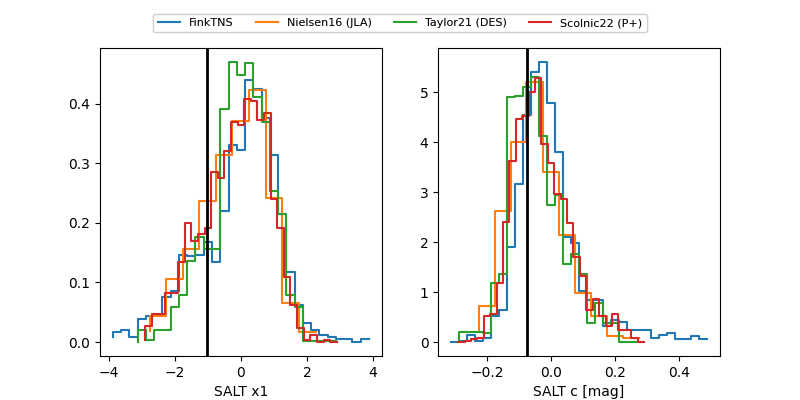

FINK: ZTF25ablmtlg
Lasair: ZTF25ablmtlg
ALeRCE: ZTF25ablmtlg
TNS: 2025vll
YSE: 2025vll
ZTF25ablmtlg (ztf,fink)
2025vll (tns,yse)
ATLAS25klx (atlas)
PS25hhf (panstarrs)
equatorial (ra, dec) = (6.9343,+28.73544)
galactic (l, b) = (116.6750,-33.84820)

last atlasc=18.84, atlaso=18.83, ps1::g=19.28, ps1::i=19.52, ps1::r=18.24, ps1::z=18.82, ztfg=19.22, ztfr=18.95
4 atlasc, 6 atlaso, 5 ps1::g, 7 ps1::i, 3 ps1::r, 1 ps1::z, 12 ztfg, 11 ztfr detections